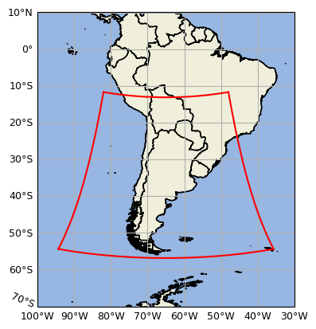

El Fire Weather Index (FWI) es un valor adimensional que estima el peligro meteorológico de incendio combinando temperatura, humedad relativa, viento y lluvia de las últimas 24 h. No predice dónde se va a iniciar un fuego: estima qué tan favorables están las condiciones para que, una vez iniciado, se propague con intensidad. Se calcula con el sistema canadiense CFFWIS sobre el modelo WRF-DET del Servicio Meteorológico Nacional, en una grilla de ~4 km en todo el país y con pronóstico a +72 h.
Cómo funciona
Elegís una fecha (o encolás la descarga de un rango nuevo) en el mapa, y el sistema:
- Descarga el pronóstico del SMN (modelo WRF-DET, run de las 00 Z) desde su bucket público.
- Extrae temperatura, humedad, viento y lluvia 24 h para cada celda de la grilla.
- Calcula los seis índices del CFFWIS, encadenados día a día (DC y DMC son acumulativos).
- Pinta el mapa con bandas vectoriales de riesgo y datos por celda al hacer click.
Los seis componentes
Tres códigos de humedad del combustible, dos índices intermedios y el índice final de peligro:
FFMC
Humedad de la hojarasca fina. Facilidad de ignición (horas).
DMC
Humedad de la capa orgánica media (días a semanas).
DC
Humedad de la capa profunda. Sequía estacional (semanas a meses).
ISI
Índice de propagación inicial: FFMC + viento.
BUI
Combustible disponible: DMC + DC.
FWI
Índice final de peligro: ISI + BUI.
Cobertura de datos
El FWI se calcula solo donde el modelo WRF-DET del SMN tiene datos: el dominio marcado en rojo, que abarca Argentina y parte del cono sur. Fuera de ese límite no hay pronóstico disponible. Las fechas accesibles dependen, además, de qué días se hayan descargado desde el mapa.

Explorar
🗺️ Mapa de peligro
Celdas de ~4 km coloreadas por nivel de
riesgo, con histórico por fecha y pronóstico a +72 h.
Abrir el mapa →
🧮 Calculadora
Calculá un FWI a mano,
cargando vos mismo la temperatura, humedad, viento y lluvia.
Abrir la calculadora →
🔌 API de índices
Calculá cualquier índice a partir del clima:
POST /indices/FFMC
POST /indices/FWI/calc